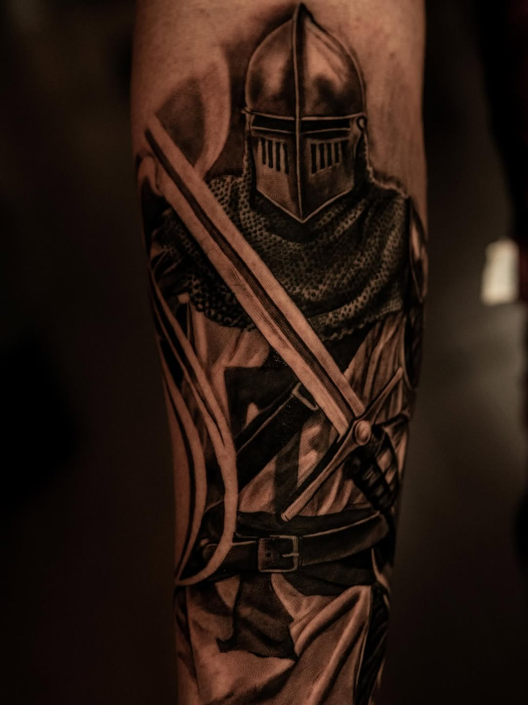

El Artista
Donde cada trazo lleva historia, poder y simbolismo

Paul Pineda
Desde la Ciudad de México, mi trabajo explora las fronteras del realismo en blanco y negro — un estilo que exige paciencia, precisión y una profunda conexión con cada imagen que cobra vida en la piel.
Mi especialidad es la iconografía religiosa: vírgenes envueltas en luz y sombra, ángeles caídos, cruces que cargan siglos de fe. Pero mi vocabulario visual no se detiene ahí. Caballeros cruzados con armaduras detalladas al milímetro. Dragones y máscaras Hannya que honran la tradición japonesa. Grandes felinos capturados en movimiento. Piezas zodiacales que cubren pechos enteros como mapas celestiales.
Cada tatuaje que creo es una pieza única. No trabajo con plantillas genéricas — cada diseño nace de una conversación personal, donde tu historia, tus símbolos y tu energía se transforman en arte permanente. El proceso es tan importante como el resultado.
Mi enfoque es cinematográfico: juego con la profundidad, el contraste dramático y la composición para que cada pieza tenga la gravedad de una obra de galería. El negro y el gris no son limitaciones — son el lenguaje perfecto para contar historias que exigen respeto y contemplación.
Si buscas un tatuaje que no solo se vea, sino que se sienta — que cargue peso, historia y significado — estás en el lugar correcto.
¿Listo?
Cuéntame tu idea. Cada gran pieza comienza con una conversación.
Agenda Tu Cita